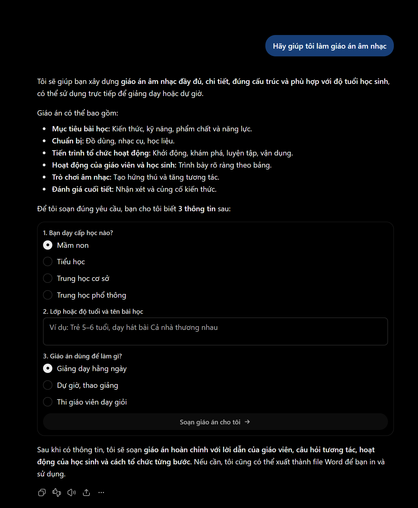
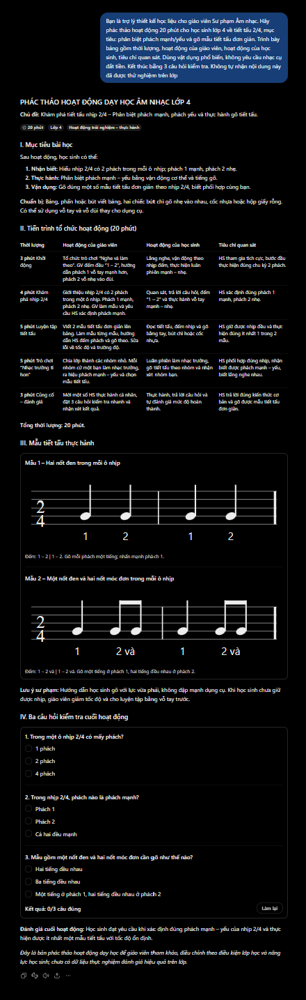

Prompt A · Chưa tối ưu
Hãy giúp tôi làm giáo án âm nhạc.
Thiếu độ tuổi, thời lượng, chuẩn đầu ra và định dạng; AI dễ trả lời chung chung.
Một câu lệnh tốt giống như một bản chỉ huy rõ ràng: nêu đúng người học, nhịp độ, mục tiêu và cách đánh giá.
Biết viết prompt có vai trò, bối cảnh, nhiệm vụ, ràng buộc và định dạng đầu ra; so sánh độ hữu ích của hai cách đặt yêu cầu.
Hãy giúp tôi làm giáo án âm nhạc.
Thiếu độ tuổi, thời lượng, chuẩn đầu ra và định dạng; AI dễ trả lời chung chung.
Bạn là trợ lý thiết kế học liệu cho giáo viên Sư phạm Âm nhạc. Hãy phác thảo hoạt động 20 phút cho học sinh lớp 4 về tiết tấu 2/4, mục tiêu: phân biệt phách mạnh/yếu và gõ mẫu tiết tấu đơn giản. Trình bày bảng gồm thời lượng, hoạt động của giáo viên, hoạt động của học sinh, tiêu chí quan sát. Dùng vật dụng phổ biến, không yêu cầu nhạc cụ đắt tiền. Kết thúc bằng 3 câu hỏi kiểm tra. Không tự nhận nội dung này đã được thử nghiệm trên lớp.
Vai trò + Bối cảnh + Mục tiêu + Ràng buộc + Định dạng
| Phút | Giáo viên | Học sinh | Quan sát |
|---|---|---|---|
| 0–3 | Vỗ mẫu mạnh – nhẹ, hỏi học sinh nhận biết | Nghe và nhắc lại | Nhận diện phách mạnh |
| 3–8 | Giới thiệu nhịp 2/4, đánh dấu 1–2 | Gõ tay theo nhịp | Giữ nhịp đều |
| 8–15 | Tổ chức nhóm 3–4 người tạo mẫu 4 ô nhịp | Thực hành và luân phiên chỉ huy | Phối hợp nhóm |
| 15–20 | Mời trình diễn, phản hồi, đặt câu hỏi | Trình diễn và tự đánh giá | Đúng phách và hợp tác |
| Tiêu chí | Prompt A | Prompt B |
|---|---|---|
| Độ rõ yêu cầu | Thấp | Cao |
| Bối cảnh lớp học | Không có | Lớp 4, 20 phút |
| Đầu ra | Khó kiểm tra | Có bảng và tiêu chí quan sát |
| Khả năng áp dụng | Cần viết lại nhiều | Có thể điều chỉnh để dùng thử |
Ảnh chụp kết quả thực tế khi sử dụng hai câu lệnh với ChatGPT. Prompt A đưa ra khung giáo án và yêu cầu bổ sung thông tin; Prompt B tạo hoạt động tiết tấu 2/4 cho lớp 4 với mục tiêu, tiến trình 20 phút, mẫu tiết tấu và câu hỏi kiểm tra.


Nhận xét từ kết quả thực tế: Prompt A chưa xác định lớp học và thời lượng nên AI hỏi thêm thông tin; Prompt B cụ thể hơn, có thể dùng làm bản phác thảo để giáo viên kiểm tra và điều chỉnh trước khi giảng dạy.
Công cụ: ChatGPT (thiết kế và so sánh câu lệnh). Khó khăn về phương pháp: câu lệnh chung chung thiếu bối cảnh; cách khắc phục: bổ sung vai trò, thời lượng, lớp học, định dạng và tiêu chí đánh giá.